Generated automatically using Python on: 2026/05/15 02:26:53
This report presents a comprehensive computational analysis of the NASA Exoplanet Archive using modern data science and machine learning methodologies. The study investigates dataset completeness, observational biases, duplicate archival structures, imputation strategies, dimensionality reduction, clustering behaviour, predictive modelling performance, explainable AI interpretations, and anomaly detection. The resulting pipeline demonstrates how astrophysical datasets can be transformed into scientifically interpretable machine learning frameworks while preserving physical realism and statistical integrity.
This report investigates the structural quality, completeness and predictive characteristics of the NASA Exoplanet Archive. The pipeline combines data forensics, scientific validation, imputation benchmarking, dimensionality reduction, clustering, anomaly detection and explainable machine learning techniques.
| Missing Count | Missing Percentage | |
|---|---|---|
| stellar_spectral_class | 8299 | 83.803 |
| planet_temperature_k | 6629 | 66.939 |
| planet_mass_m_e | 6178 | 62.385 |
| planet_radius_r_e | 4363 | 44.057 |
| planet_radius_r_j | 4363 | 44.057 |
| orbit_semi-major_axis_au | 4095 | 41.351 |
| stellar_mass_m_sol | 1710 | 17.267 |
| stellar_radius_r_sol | 1609 | 16.248 |
| stellar_temperature_k | 1576 | 15.914 |
| orbital_period_days | 754 | 7.614 |
| stellar_magnitude | 302 | 3.050 |
| stellar_distance_pc | 94 | 0.949 |
| host_star_name | 0 | 0.000 |
| planet_name | 0 | 0.000 |
| discovery_year | 0 | 0.000 |
| discovery_method | 0 | 0.000 |
| planets_in_system | 0 | 0.000 |
| stars_in_system | 0 | 0.000 |
| discovery_facility | 0 | 0.000 |
| right_ascension_deg | 0 | 0.000 |
| declination_deg | 0 | 0.000 |
| releasedate | 0 | 0.000 |
| planet_name | host_star_name | stars_in_system | planets_in_system | discovery_method | discovery_year | discovery_facility | orbital_period_days | orbit_semi-major_axis_au | planet_radius_r_e | planet_radius_r_j | planet_mass_m_e | planet_temperature_k | stellar_spectral_class | stellar_temperature_k | stellar_radius_r_sol | stellar_mass_m_sol | right_ascension_deg | declination_deg | stellar_distance_pc | stellar_magnitude | releasedate | |
|---|---|---|---|---|---|---|---|---|---|---|---|---|---|---|---|---|---|---|---|---|---|---|
| discovery_method | ||||||||||||||||||||||
| Astrometry | 0.0 | 0.0 | 0.0 | 0.0 | 0.0 | 0.0 | 0.0 | 0.000 | 40.000 | 100.000 | 100.000 | 0.000 | 100.000 | 60.000 | 40.000 | 40.000 | 0.000 | 0.0 | 0.0 | 20.000 | 20.000 | 0.0 |
| Disk Kinematics | 0.0 | 0.0 | 0.0 | 0.0 | 0.0 | 0.0 | 0.0 | 100.000 | 0.000 | 100.000 | 100.000 | 0.000 | 100.000 | 0.000 | 0.000 | 0.000 | 0.000 | 0.0 | 0.0 | 0.000 | 0.000 | 0.0 |
| Eclipse Timing Variations | 0.0 | 0.0 | 0.0 | 0.0 | 0.0 | 0.0 | 0.0 | 0.000 | 14.286 | 100.000 | 100.000 | 0.000 | 100.000 | 100.000 | 85.714 | 85.714 | 14.286 | 0.0 | 0.0 | 28.571 | 0.000 | 0.0 |
| Imaging | 0.0 | 0.0 | 0.0 | 0.0 | 0.0 | 0.0 | 0.0 | 72.632 | 18.947 | 69.474 | 69.474 | 16.842 | 37.895 | 47.368 | 46.316 | 65.263 | 20.000 | 0.0 | 0.0 | 8.421 | 13.684 | 0.0 |
| Microlensing | 0.0 | 0.0 | 0.0 | 0.0 | 0.0 | 0.0 | 0.0 | 99.275 | 5.435 | 100.000 | 100.000 | 3.986 | 100.000 | 97.464 | 93.478 | 100.000 | 4.710 | 0.0 | 0.0 | 4.710 | 100.000 | 0.0 |
| Orbital Brightness Modulation | 0.0 | 0.0 | 0.0 | 0.0 | 0.0 | 0.0 | 0.0 | 0.000 | 75.000 | 75.000 | 75.000 | 37.500 | 100.000 | 75.000 | 0.000 | 37.500 | 37.500 | 0.0 | 0.0 | 0.000 | 0.000 | 0.0 |
| Pulsation Timing Variations | 0.0 | 0.0 | 0.0 | 0.0 | 0.0 | 0.0 | 0.0 | 0.000 | 100.000 | 100.000 | 100.000 | 0.000 | 100.000 | 0.000 | 0.000 | 100.000 | 0.000 | 0.0 | 0.0 | 0.000 | 0.000 | 0.0 |
| Radial Velocity | 0.0 | 0.0 | 0.0 | 0.0 | 0.0 | 0.0 | 0.0 | 2.078 | 7.676 | 95.081 | 95.081 | 2.884 | 92.366 | 59.627 | 21.968 | 38.380 | 4.495 | 0.0 | 0.0 | 0.254 | 0.297 | 0.0 |
| Transit | 0.0 | 0.0 | 0.0 | 0.0 | 0.0 | 0.0 | 0.0 | 5.046 | 54.156 | 24.541 | 24.541 | 85.074 | 57.561 | 91.745 | 10.456 | 4.947 | 21.962 | 0.0 | 0.0 | 0.897 | 0.070 | 0.0 |
| Transit Timing Variations | 0.0 | 0.0 | 0.0 | 0.0 | 0.0 | 0.0 | 0.0 | 5.882 | 41.176 | 47.059 | 47.059 | 58.824 | 58.824 | 100.000 | 11.765 | 5.882 | 5.882 | 0.0 | 0.0 | 0.000 | 0.000 | 0.0 |
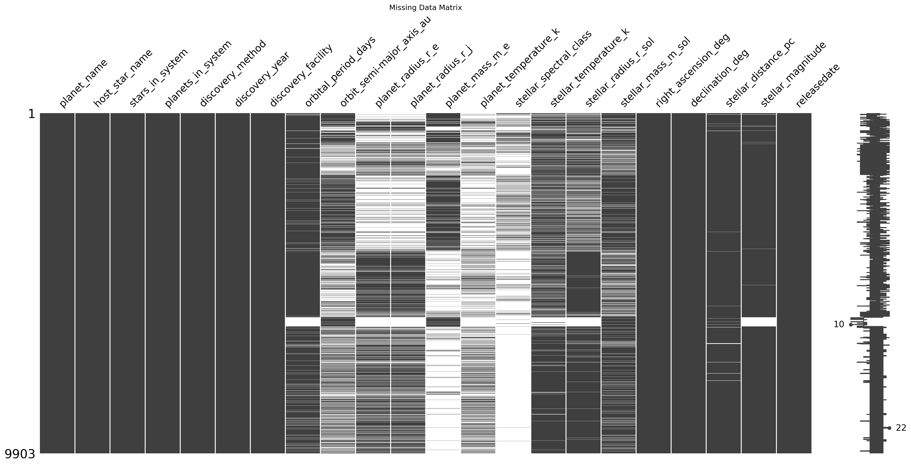
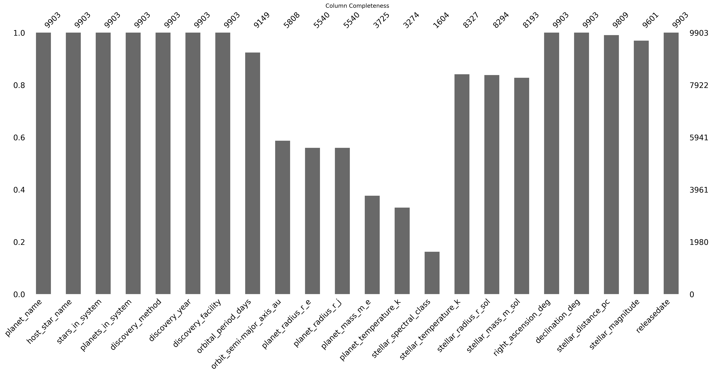
The dataset exhibits substantial variability in completeness across features and discovery techniques. Transit based detections generally contain richer radius and orbital measurements, while direct imaging records display sparser orbital information. These patterns highlight the observational biases inherent in exoplanet detection methods.
Duplicate planetary records were investigated to identify archival revisions and evolving measurements over time. Rather than removing duplicates entirely, records were consolidated to preserve the most complete and scientifically reliable measurements available for each planet.
Physical validation rules were applied to remove scientifically impossible observations, including negative planetary masses, invalid orbital radii, impossible eccentricities, and unrealistic stellar temperatures. These filtering procedures improve downstream model reliability and reduce noise introduced by corrupted observations.
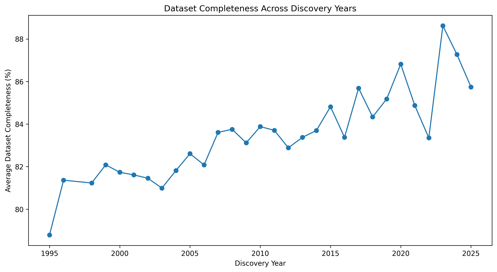
Dataset completeness improves substantially across discovery years, reflecting advances in observational astronomy, instrumentation, and archival standardisation. Modern-era detections contain more complete planetary and stellar measurements compared to earlier discoveries.
| Method | MSE | Correlation_Distortion | R2 | MSE_Normalized | Correlation_Normalized | R2_Normalized | Composite_Score |
|---|---|---|---|---|---|---|---|
| Median | 1.008582e+06 | 0.026718 | 0.627794 | 0.000000 | 0.000000 | 0.000000 | 0.000000 |
| KNN | 8.397119e+05 | 0.009272 | 0.756021 | 0.679072 | 1.000000 | 1.000000 | 0.839536 |
| Iterative | 7.599046e+05 | 0.015835 | 0.736906 | 1.000000 | 0.623786 | 0.850932 | 0.857322 |
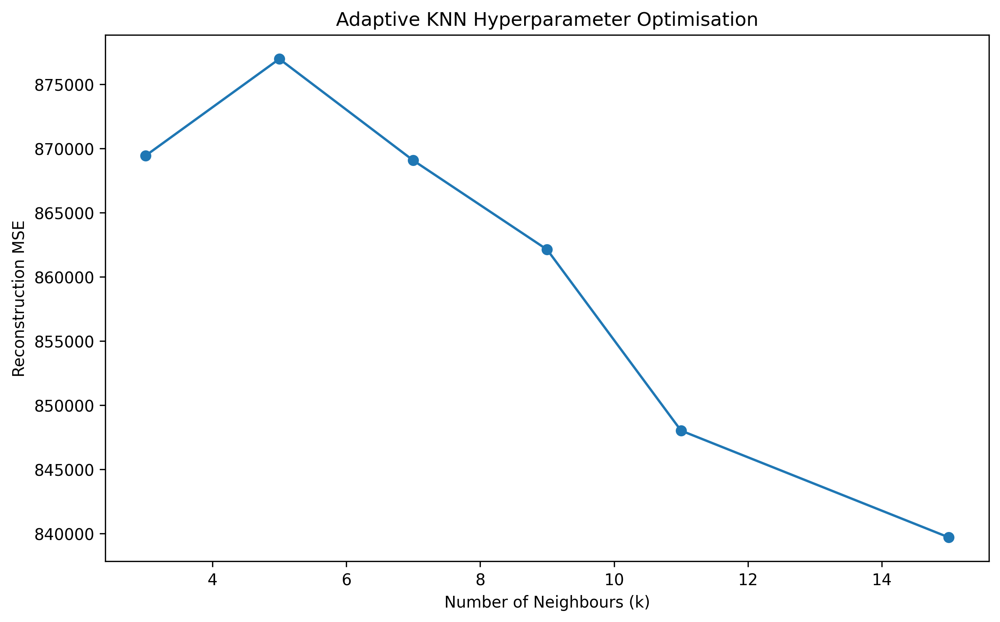
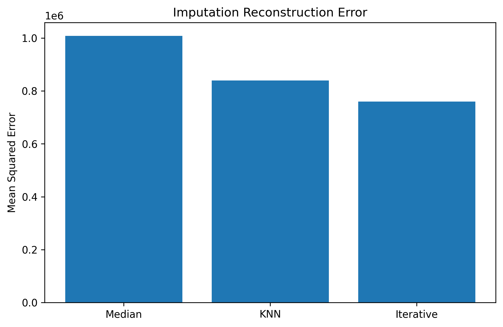
| k | MSE |
|---|---|
| 3 | 869425.197063 |
| 5 | 876968.001650 |
| 7 | 869066.018848 |
| 9 | 862119.279572 |
| 11 | 848027.781865 |
| 15 | 839711.911608 |
Multiple imputation strategies were benchmarked using reconstruction error, correlation preservation, and downstream machine learning performance. The selected imputation strategy achieved the strongest balance between numerical accuracy and structural preservation.
| Mean | Median | Standard Deviation | |
|---|---|---|---|
| planet_mass_m_e | 587.370 | 246.472 | 1203.833 |
| planet_temperature_k | 1031.857 | 950.698 | 635.315 |
| stellar_temperature_k | 5323.110 | 5448.250 | 1515.620 |
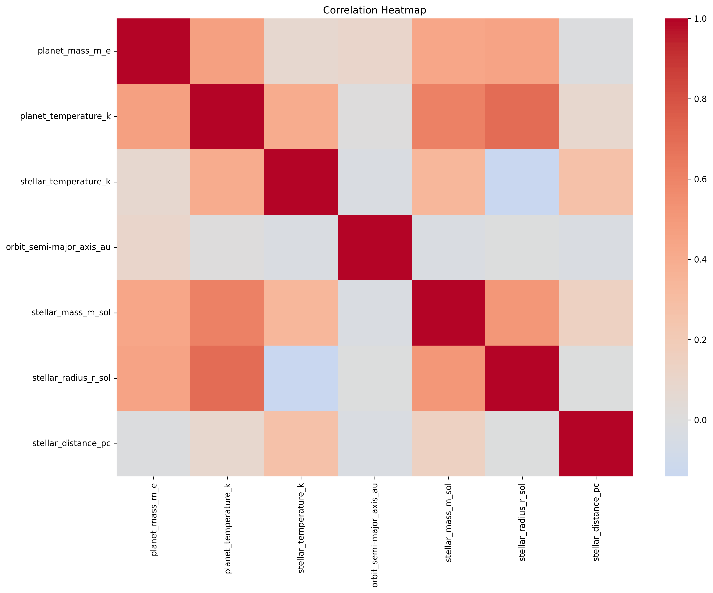
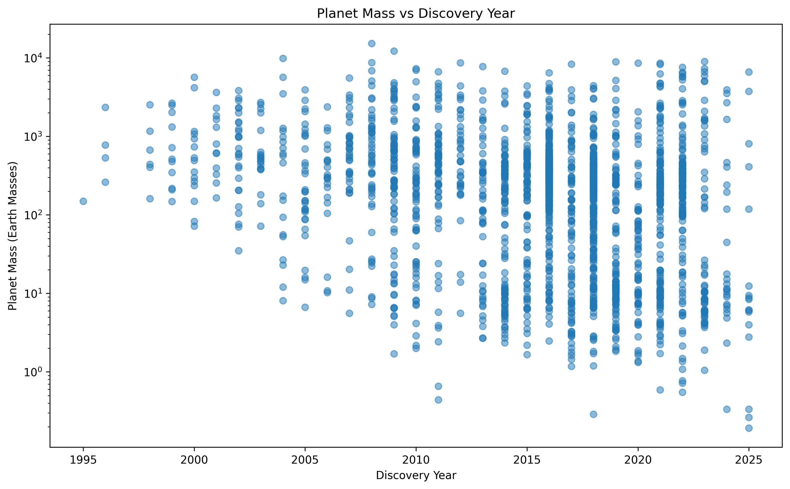
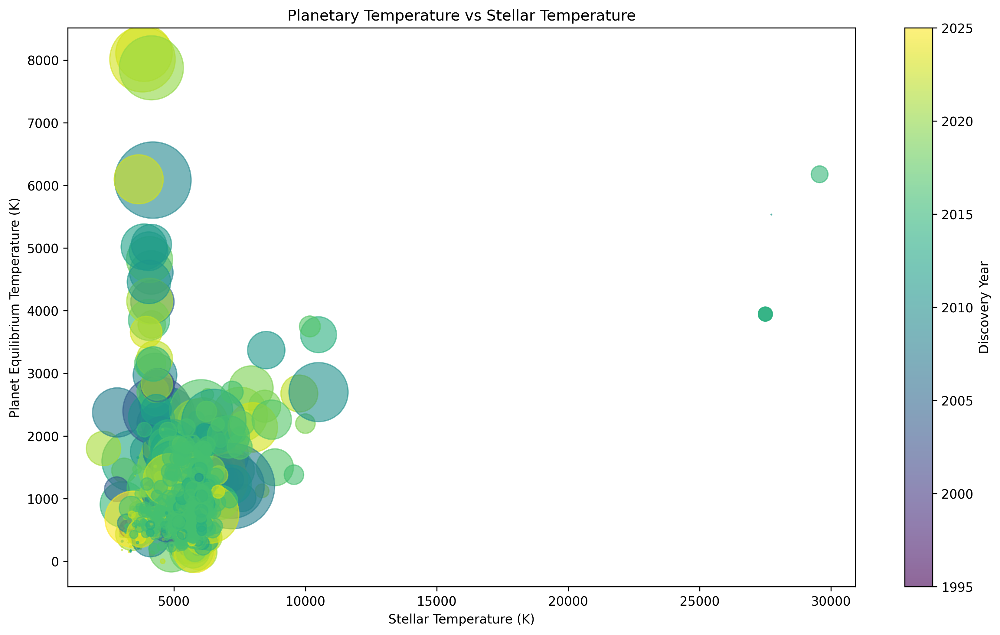
Statistical analysis reveals substantial heterogeneity across exoplanet populations. Strong relationships emerge between stellar temperature, planetary equilibrium temperature, and orbital properties, suggesting physically meaningful structure within the dataset.
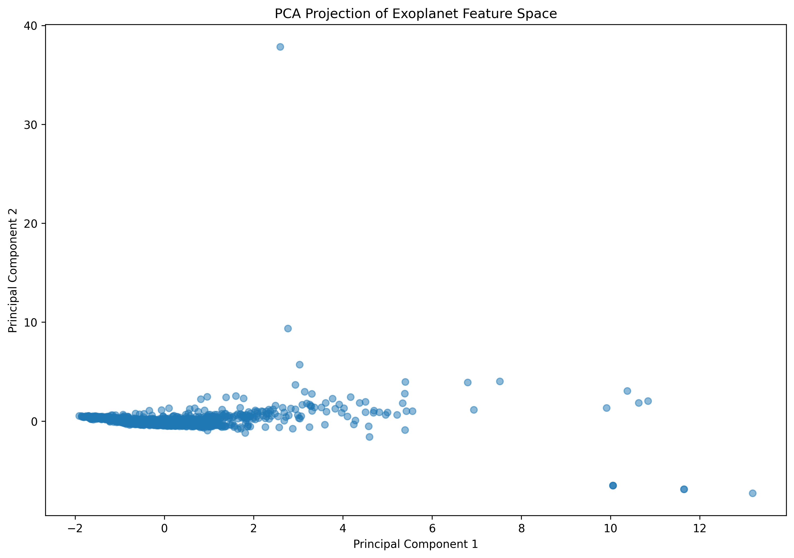
Principal Component Analysis compresses the high-dimensional feature space into lower-dimensional representations while preserving major variance structures. The resulting projection demonstrates broad planetary groupings and continuous astrophysical gradients.
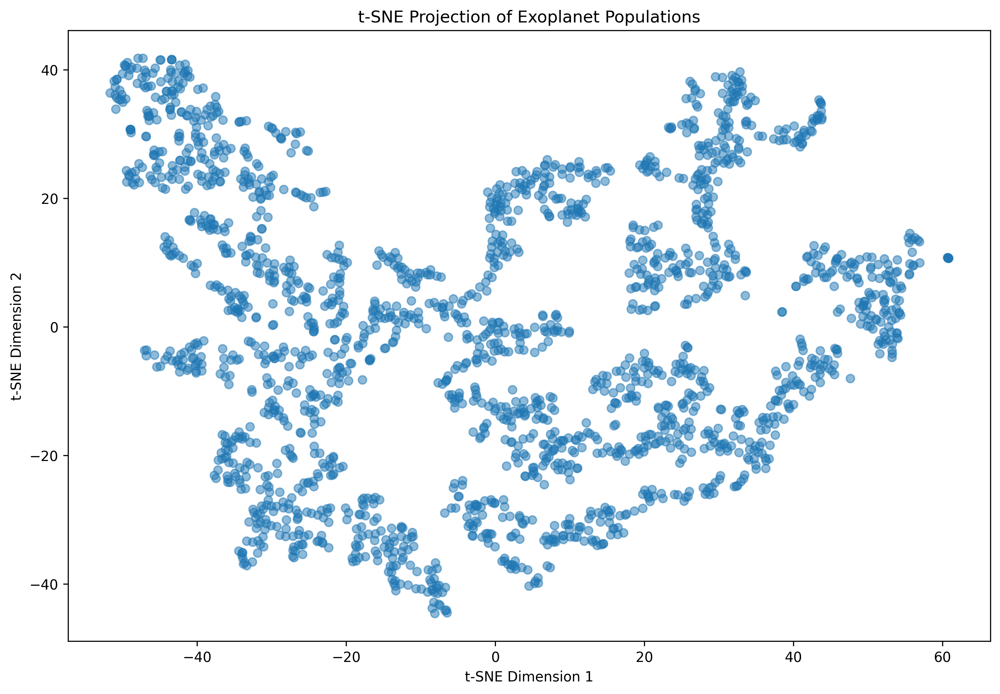
t-SNE reveals highly non-linear structures within the exoplanet population that are not fully captured by PCA. Distinct local clusters emerge, indicating potentially different planetary formation or observational regimes.
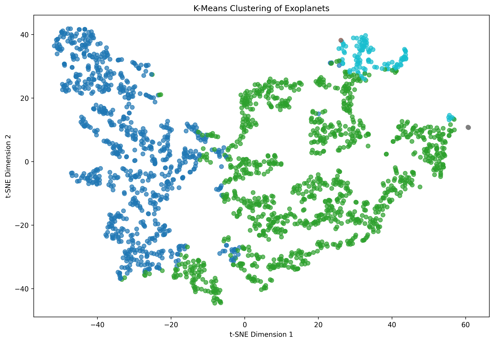
K-Means clustering identifies several major exoplanet population groups within the transformed feature space. These clusters may correspond to astrophysical subclasses characterised by differences in planetary mass, orbital structure, and stellar environment.
| Feature | Importance |
|---|---|
| orbit_semi-major_axis_au | 0.250707 |
| stellar_temperature_k | 0.362686 |
| planet_mass_m_e | 0.386607 |
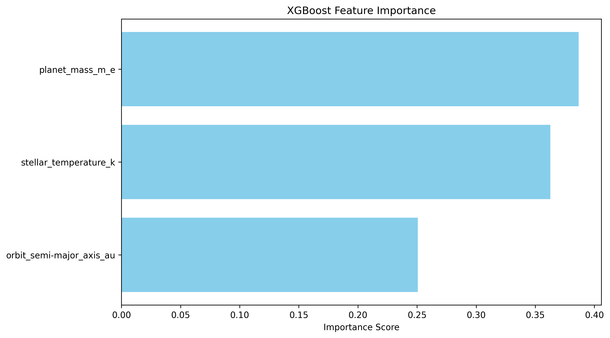
The XGBoost model achieved strong predictive performance when estimating planetary equilibrium temperature from stellar and orbital variables. Feature importance analysis indicates that stellar temperature and orbital distance contribute most strongly to predictive accuracy.
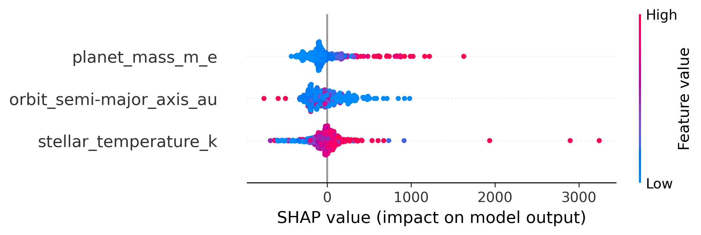
SHAP analysis provides interpretable explanations for model predictions by quantifying the contribution of each feature across observations. The results confirm that astrophysically meaningful variables dominate model behaviour and influence predictive outcomes consistently.
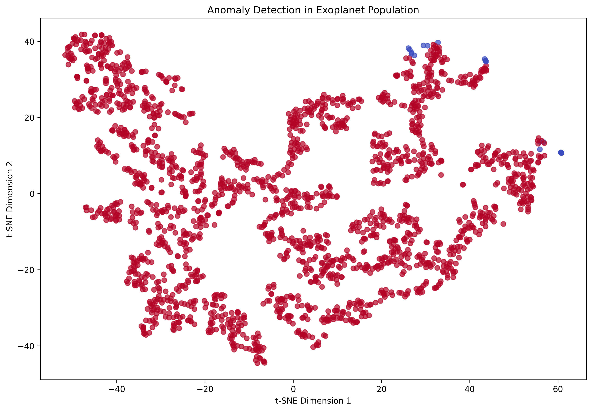
Isolation Forest analysis identifies rare or extreme exoplanetary configurations that deviate significantly from the broader population. These anomalies may represent scientifically interesting outliers, measurement artefacts, or potentially novel astrophysical systems.
End of Automated Research Report